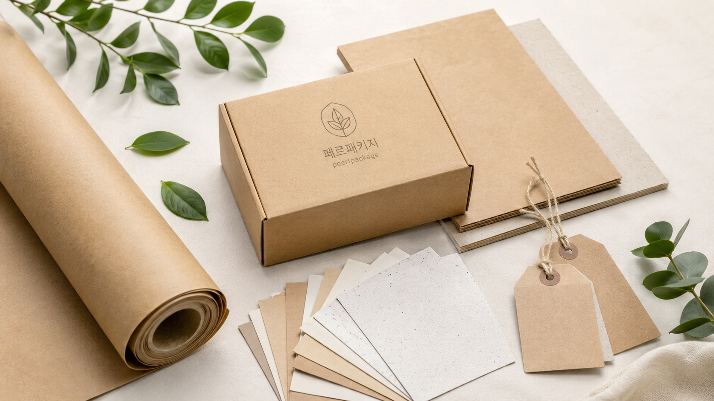
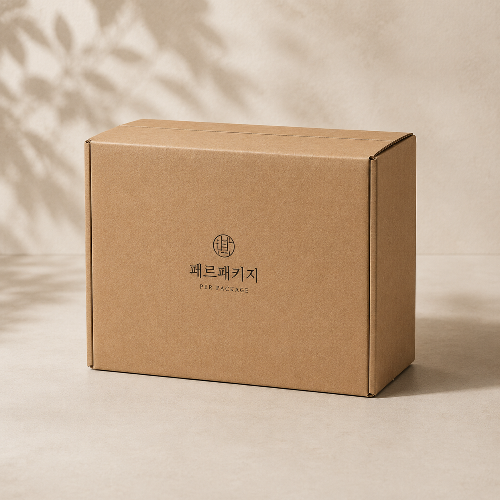

FSC 인증지, 재생지, 크라프트지 등 제품 이미지와 내구성에 맞는 종이 선택을 검토합니다.
SUSTAINABILITY
필요한 만큼, 오래 쓰일 패키지
친환경 패키지는 소재 이름만으로 결정되지 않습니다. 제품 보호, 낭비 없는 수량, 재활용 가능성, 브랜드 메시지가 함께 맞아야 합니다.
PAPER소재만 보지 않습니다
인증지, 재생지, 크라프트지의 질감과 내구성을 제품 이미지에 맞춰 비교합니다.
SIZE불필요한 부피를 줄입니다
제품 보호에 필요한 범위 안에서 구조와 부자재를 간결하게 설계합니다.
QTY수량 낭비를 줄입니다
샘플, 행사, 본제작 수량을 분리해 과잉 제작과 재고 부담을 낮춥니다.

지속가능한 패키지를 위한 선택지
제작 목적과 예산에 따라 적용 가능한 친환경 방향을 현실적으로 제안합니다.
행사, 샘플, 본제작 수량을 구분해 불필요한 재고와 제작 낭비를 줄입니다.
제품 보호에 필요한 범위 안에서 부피와 부자재를 줄이는 구조를 함께 봅니다.

CHECK POINT
친환경 제작 전 확인할 것
- 인증지 사용이 꼭 필요한지, 브랜드 메시지용인지 구분
- 재활용을 방해하는 과한 코팅과 복합 부자재 사용 여부 확인
- 배송 중 파손을 막을 수 있는 최소한의 보호 구조 검토
- 제품 가격대와 고객 경험에 맞는 소재 질감 선택
친환경 소재도 제작 조건에 맞춰 상담하세요
제품 사진과 희망 수량을 알려주시면 적용 가능한 소재와 구조부터 정리해드립니다.